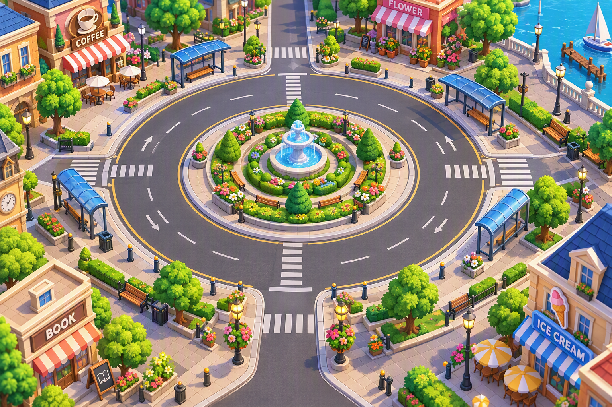

⚙
BUS
LOOP
CITY PUZZLE
BUS
开始游戏
▶
🔑 输入关卡代码
🏆 关卡选择
继续上次进度
‹
LEVEL 1
LOOP-001-XX
🪙
320
0 MOVES

选择巴士
仅前三辆可出发
↶
撤销
3
💡
提示
3
🔀
洗牌
3
↻
重玩
‹
关卡选择
1–25
26–50
51–75
76–100
×
输入关卡代码
输入通关时保存的代码，可直接进入相应关卡。
确认进入
★
★
★
LEVEL CLEARED!
本关继续代码
复制代码
🪙 +30
下一关 ▶
返回首页